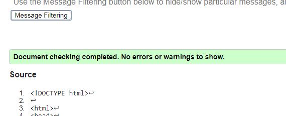
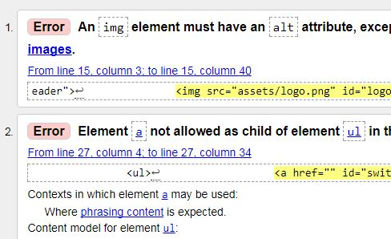
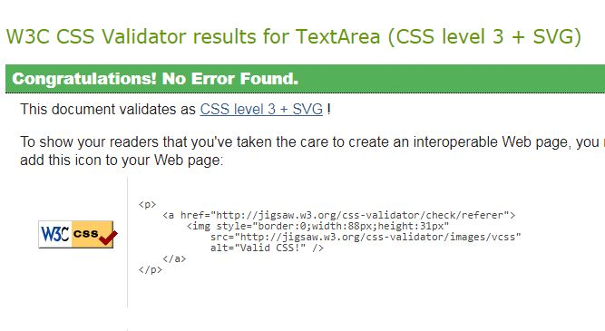
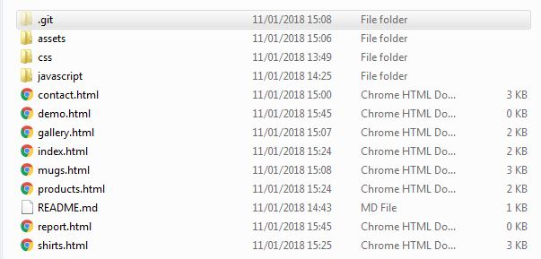
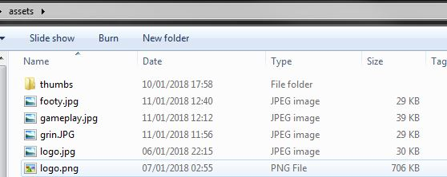
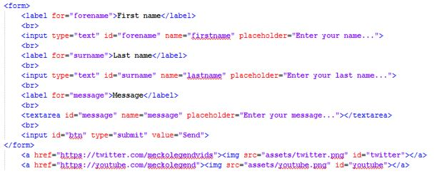
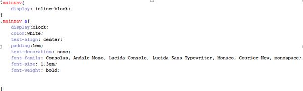

Web specifications and standards keep websites to certain standards. These standards are modernised constantly and make sure that websites are accessible to as many people as possible and are much more safe and secure. Web standards make sure that web development is also much easier and understandable that it would be without. Languages used in web development are tailored to make sure specifications and are met.
Using web standards and specifications made it much easier to develop the website than without. Without these it would be a lot harder to lay the foundation of the website and build it up from there. Functionality is also aided by web standards. The use of libraries such as JQuery make extending such functionality even easier and allow for more interactivity within the website. Newer web standards and the tools used to utilize them also tend to be a lot faster and more efficient than previous versions. Certain features and standards are also made or made to be easier to use so that developers can learn and implement them into their websites with ease. Many tools are available to web developers today such as libraries, plugins and development environments to create their sites. These aid the developer and help them create a site quicker.
Due to the modernisation of web standards and specifications, it also means that older browsers and tools used within web are left behind and often cannot utilize the features and functions of modern websites. Also it may take longer to learn certain web standards and newer tools available to a developer. An inexperienced user might not understand why certain features won’t work and the changes that eventually come about as a result of modernisation.
I have tested the website on multiple browsers. These include, Chrome (desktop), Firefox, IE and Chrome (mobile). The website worked across all these browsers although results were somewhat different. The positioning of elements was a struggle and text responsiveness hasn’t yet been implemented. This can makes the site look different across different platforms and browsers.
Below are examples of the web validation done on my website
The validation on the first 2 pages passes without any warnings. The first 2 pages don’t have any incorrect element placement and include alt tags on the few images within the pages.
Second is an example of 4 other pages. These didn’t validate due to the images not all having alt tags as well as anchor tags being placed within list elements. This rule was unknown to me before checking the validation on the webpage, however the site still works even with this broken rule. These are the only 2 errors are present in the website when validation is checked.
Below is the CSS validation
The CSS validation passed without any problems.
Below is the file structure of the site
This is the root directory of the website. The webpages and the required folders are all stored in the root folder. The .git folder is for GitHub, where the site is uploaded too, The assets folder contains all the images used in the website, the CSS folder contains the CSS file and the JavaScript folder contains the script file.
This is a screenshot from inside the assets folder. In the root of the assets folder are all the images used in the website that are for display, the thumbs folder contains smaller versions of the shirts and mugs that are used when the user selects different versions of said item.
The image above shows the code for the logo and the main navigation bar at the top of the page. The current page is denoted by the use of the “current” class. This is used to style the correct section of the navigation bar to make the current page’s link stand out.
This image shows the HTML code for the form on the contact page as well as two image links that are used to link to the appropriate social media platforms. The form lists 3 areas for users to input information. Two places for their names and a text area for the message they would like to send.
The image above is a CSS code snippet that determines the styling on the thumbnail images used in the shirt and mug pages that the user clicks on. They are all collected in an unordered list and therefore appropriate styling was required to make them look more suitable for their role on the webpage. A border is placed around each image to make them stand out and to separate them from each other. A neutral grey background was place within these elements so that the colour of the page itself didn’t clash with any of the images or make others harder to see.
This CSS snippet is used to style the navigation class as well as the links themselves. The text within the navigation has been styles so that it stands out and is easier for the user to see and read. It also fits with the style of the website itself. It is important that the navigation elements were all displayed in a horizontal row. The first block of code styles the elements so that they are positioned correctly. As with the thumbnails in the previous example, the navigation at both the top and bottom of the page are unordered lists.
This code snippet is used to switch out an image on the Shirts page. This particular block of code switches the image to a white shirt. Comments are added to this block so the code is easier to understand however repeated blocks do not have the same comments. This function is also used for the mugs section of the website. The first line of this code checks and makes sure that the webpage is ready before any of the code is used.
{kind=link}